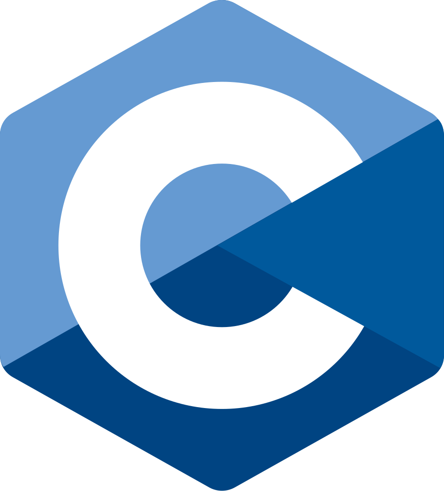
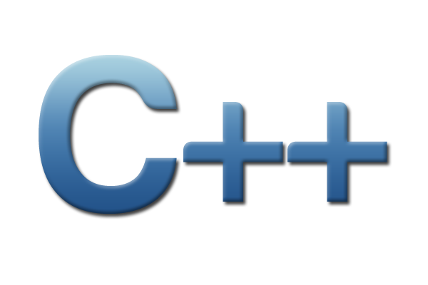
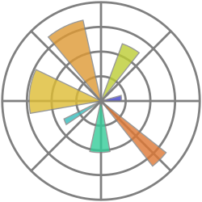
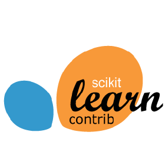
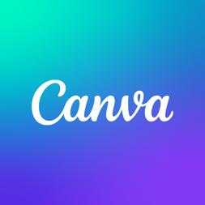

Mes compétences développement 💻
PHP

C
C++Je m’appelle Serenic. Après un BTS SIO option SLAM, j’ai choisi de poursuivre en Bachelor Sciences Informatiques et Développement IA afin d’approfondir ma compréhension de la manière dont les données peuvent être exploitées pour analyser, modéliser et aider à la prise de décision.
Au fil de mon parcours, j’ai travaillé sur des projets autour de Python, du traitement et de l’analyse de données, de la manipulation de jeux de données complexes et de l’exploration d’algorithmes. J’aime partir d’un problème concret, explorer les données, tester différentes approches, comparer les résultats et affiner les modèles jusqu’à obtenir une solution cohérente et pertinente.
Je développe progressivement une approche plus analytique et rigoureuse, avec l’objectif de poursuivre vers un Master orienté Data Science ou Intelligence Artificielle, afin d’approfondir mes compétences en modélisation, machine learning et analyse avancée.
En dehors de mes études, le football, les jeux vidéo et les échecs sont également des passions qui occupent une place importante dans mon quotidien et me permettent de m’évader et de stimuler ma réflexion.
Convaincu que la data et l’intelligence artificielle jouent un rôle central dans les transformations technologiques actuelles, je souhaite poursuivre mon parcours vers un Master orienté Data Science ou Intelligence Artificielle. Je m’intéresse particulièrement au machine learning, à la modélisation et à l’exploitation avancée des données pour comprendre des problématiques complexes et proposer des solutions pertinentes.
Après mon Bachelor Sciences Informatiques et Développement IA, mon objectif est d’intégrer un Master spécialisé afin d’approfondir mes compétences en statistiques, modélisation, apprentissage automatique et analyse de données à grande échelle.
À moyen terme, je vise un poste de Data Scientist, où je pourrai concevoir des modèles, analyser des données stratégiques et contribuer à des projets à forte valeur ajoutée dans des secteurs comme la finance, la technologie ou la cybersécurité.
Après l'obtention de mon BTS SIO, j'ai choisi de poursuivre mon parcours en intégrant le Bachelor Sciences Informatiques et Développement IA.
Ce Bachelor a pour objectif de former des profils capables de comprendre, concevoir et développer des solutions autour de la data, du développement informatique avancé et de l'intelligence artificielle.
Il permet d'acquérir des compétences solides en programmation, en analyse de données, en modélisation et en conception de solutions intelligentes, tout en préparant à une poursuite d'études en Master ou à une insertion professionnelle dans les métiers de la data et de l'IA.
Ce Bachelor met l'accent sur :
Avant de commencer à parler de moi, je vous propose de présenter en premier lieu ma filière dont je suis affecté.
Le Brevet de Technicien Supérieur aux Services Informatiques aux Organisations (BTS SIO) s'adresse à ceux qui souhaitent se former en deux ans aux métiers d'administrateur réseau ou de développeur. Pour par la suite intégrer directement le marché du travail ou continuer des études, dans le domaine de l'informatique.
L'option Solutions d'infrastructure, systèmes et réseaux forme des professionnels des réseaux et équipements informatiques (installation, maintenance, sécurité). En sortant d'un BTS SIO SISR, vous serez capables de gérer et d'administrer le réseau d'une société et d'assurer sa sécurité et sa maintenance.
L'option Solutions logicielles et applications métiers forme des spécialistes des logiciels (rédaction d'un cahier des charges, formulation des besoins et spécifications, développement, intégration au sein de la société).
La spécialité SIG est la spécialité informatique de la filière STMG
Développement et maintenance d'applications
Conception de solutions orientées data, analyse de données et initiation au machine learning
Projet de deep learning consistant à entraîner et comparer un Perceptron Multicouche (MLP) et un CNN type LeNet-5 sur le dataset Fashion-MNIST avec TensorFlow / Keras.
Réalisations : Implémentation de modèles simples et améliorés (dropout, batch normalization), analyse des performances (accuracy, loss, matrices de confusion), visualisation des courbes d'apprentissage, étude comparative pédagogique MLP vs CNN.
Technologies : Python, TensorFlow, Keras, NumPy, Matplotlib, Scikit-learn
Voir la documentationDéveloppement d'un dashboard analytique complet avec backend Flask et visualisations interactives.
Réalisations : Construction d'une API Flask avec endpoints statistiques, analyse de données avec Pandas, 11 graphiques interactifs (Chart.js), KPIs dynamiques et système de filtres, architecture backend / frontend maintenable.
Technologies : Python, Flask, Pandas, Chart.js, HTML, JavaScript
Voir la documentationProjet structuré de data engineering visant à nettoyer et standardiser des données produits, clients et ventes.
Réalisations : Création de pipelines modulaires, nettoyage et normalisation des données, génération de KPI qualité, fusion de catalogues multi-sources, production de datasets propres pour exploitation downstream.
Technologies : Python, Pandas
Voir la documentationProjet collaboratif combinant API Flask + Frontend + Base MySQL, conteneurisé avec Docker.
Réalisations : Développement de l'API Flask (routes + SQLAlchemy), intégration services externes (API Bitcoin, BoredAPI), configuration Docker & Docker Compose, architecture multi-services.
Technologies : Docker, Flask, MySQL, SQLAlchemy, HTML/CSS/JS
Voir la documentationJ'ai codé un jeu d'échec en C, où les joueurs déplacent les pièces selon les règles classiques, avec gestion des tours, du mat et de l'échec.
Voir la documentationCréation d'une application en Java, dans le cadre d'un projet scolaire, permettant à une entreprise d'ajouter rapidement des informations sur ses clients ainsi que sur elle-même à sa base de données via des requêtes SQL.
Voir la présentationDans le cadre de mon projet scolaire, j'ai développé un site web en PHP, HTML et CSS avec un système de connexion et une interaction avec une base de données MySQL.
Voir la documentationDans le cadre de mon projet scolaire, j'ai développé un site e-commerce en PHP, HTML et CSS avec une base de données MySQL.
Voir la présentationJ'ai développé une plateforme e-commerce en PHP comprenant un catalogue de stands, un système de panier et une authentification utilisateur, en utilisant les technologies HTML, CSS, PHP et MySQL.
Voir la documentationMissions : Préparation et installation de PC et de périphériques, brassage de prises informatiques, déménagement de matériel informatique.
Compétences développées : Utilisation de Microsoft SCCM, inventaire du matériel dans SMAX, adressage d'un PC dans l'IPAM, brassage de prises réseau.
Voir le rapport de stageCréation du site internet Paris_Events pour la gestion des salons d'exposition à Paris.
Voir le rapport de stage
C
C++
Matplotlib
Scikit-learn
CanvaFlux RSS : Feedly pour suivre MIT Tech Review, Wired, AI Weekly
Alertes : Google Alerts sur "AI trends 2024", "Ethical AI"
Réseaux : LinkedIn et Twitter pour suivre les experts (Yann LeCun, Andrew Ng)
Ressources : VentureBeat AI, arXiv.org, ZDNet AI
2024 marque une accélération des modèles d'IA générative. OpenAI prépare GPT-5 avec une meilleure compréhension contextuelle et intégration multimédia. Google renforce son modèle Gemini 1.5 capable de traiter des contextes dépassant le million de tokens. L'open-source progresse avec Llama 3 (Meta) et Mistral AI qui séduit investisseurs et chercheurs.
Enjeux : Qualité des réponses, lutte contre les deepfakes et désinformation.
L'AI Act de l'UE encadre strictement l'IA (transparence des algorithmes, limitation de la reconnaissance faciale). Les deepfakes deviennent un problème critique en période électorale, avec des solutions émergentes comme le watermarking.
L'impact sur l'emploi s'accentue : outils comme GitHub Copilot automatisent 30% du code, mais créent de nouveaux métiers (Prompt Engineer, AI Trainer).
Santé : Google DeepMind développe des modèles surpassant les radiologues pour détecter le cancer du sein.
Finance : Détection des fraudes en temps réel, trading algorithmique avec des hedge funds comme Renaissance Technologies.
Robotique : Figure AI (soutenue par OpenAI) dévoile un robot humanoïde capable d'apprentissage autonome.
Opportunités : Gains de productivité, progrès médicaux, personnalisation des services.
Risques : Désinformation via deepfakes, biais algorithmiques, dépendance technologique.
À surveiller : Déploiement de GPT-5, régulations internationales, intégration IA quantique.